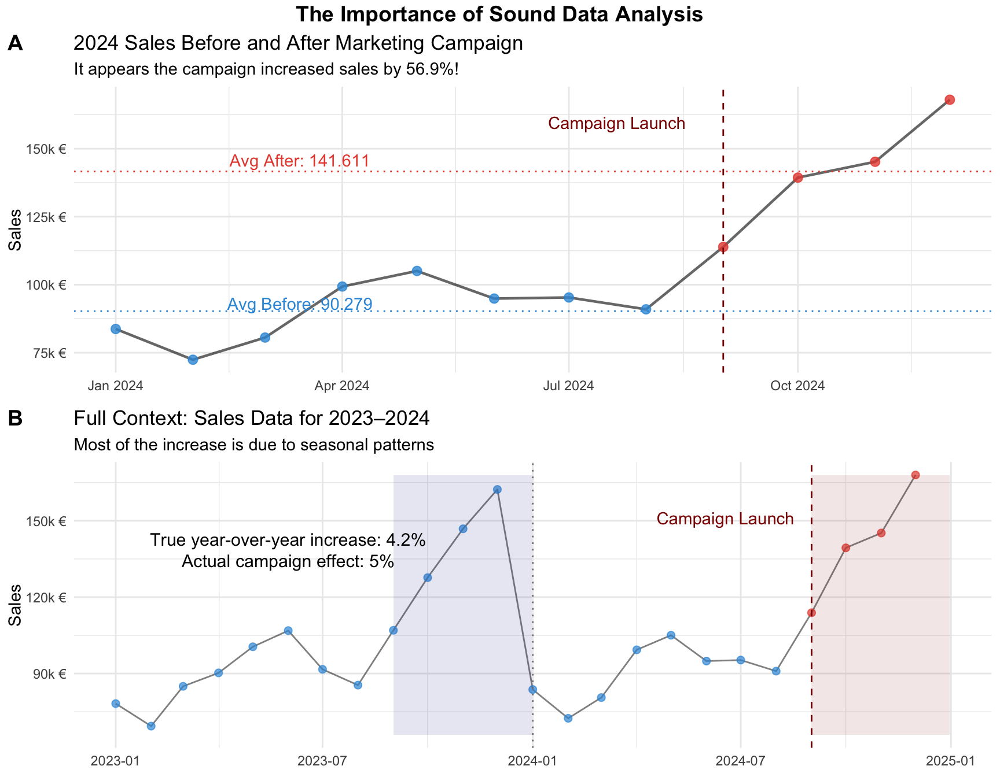
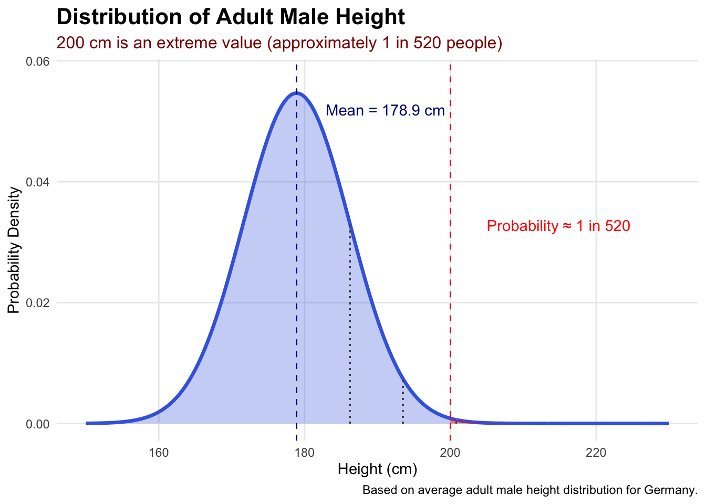
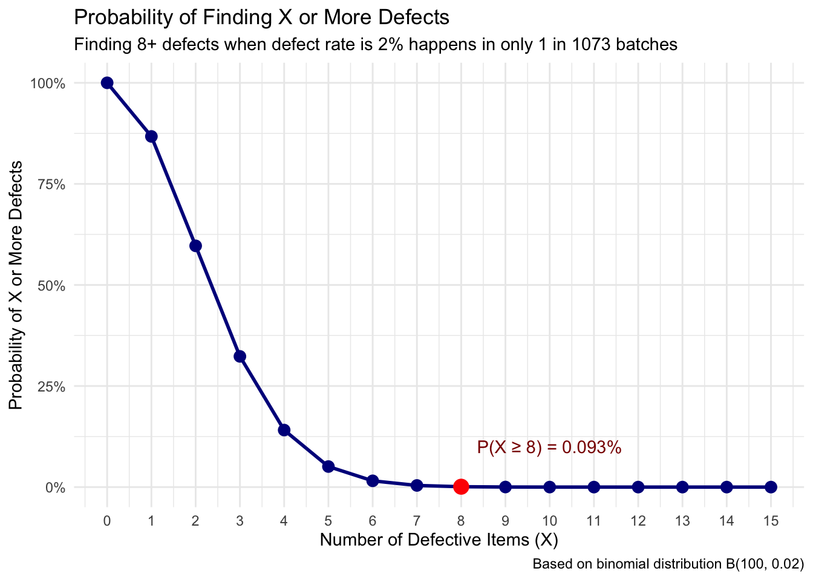
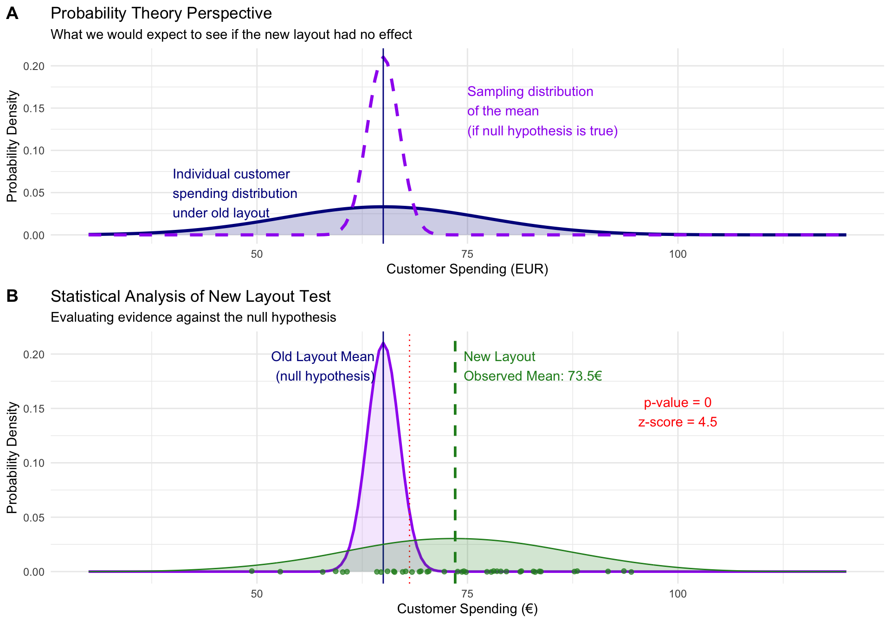

Packages used for R examples
library(dplyr)
library(tidyr)
library(ggplot2)
library(ggpubr)
library(kableExtra)Claudius Gräbner-Radkowitsch
June 15, 2026
June 15, 2026
This page is the first entry in the Statistics Recap track.
Next resource: Data Fundamentals: Types, Scales, and Notation
If you are approaching statistics with a sense of dread, you are not alone. Many students in social science and business fields approach statistics with apprehension — often because they have had negative experiences with mathematics in the past, or because statistics feels abstract and removed from the practical questions they actually care about.
Let us start by addressing this directly: statistics is not about complex mathematical formulas that only mathematicians can understand. It is a powerful toolkit for making sense of uncertainty and making better decisions in an uncertain world.
Think of statistics as a language — a way of communicating with data and extracting meaningful insights from noise. Just as you would not expect to become fluent in a foreign language overnight, becoming comfortable with statistical thinking takes time and practice. The goal is not to become a mathematician; it is to develop a mindset that helps you navigate uncertainty with confidence.
At its core, statistics is the science of learning from data. More specifically, it is a collection of methods and principles that help us collect, organize, analyze, and interpret information to answer questions and solve problems. But why do we need this formal approach? Why can’t we just look at data and draw conclusions intuitively?
Consider a simple business scenario: You’re the marketing manager for a company that recently launched a new advertising campaign. After three months, you notice that sales have increased by over 57% compared to the average sales before the campaign. This sounds like good news, but several questions immediately arise: Is this increase actually due to your campaign, or could it be caused by seasonal trends, competitor actions, or random fluctuations? How confident can you be that this trend will continue? Is this increase significant enough to justify the campaign’s cost? Figure 1 gives a first idea of why the answer to these questions is not as easy as it might appear.
set.seed(123)
dates <- seq(as.Date("2023-01-01"), as.Date("2024-12-01"), by = "month")
month <- format(dates, "%m")
year <- format(dates, "%Y")
seasonal_factor <- c(0.8, 0.7, 0.8, 0.9, 1.0, 1.0, 0.9, 0.9, 1.1, 1.3, 1.4, 1.6)
monthly_effect <- seasonal_factor[as.numeric(month)]
base_sales <- 100000 * (1 + 0.03 * (as.numeric(year) - 2023)) * monthly_effect
sales <- base_sales * rnorm(length(dates), mean = 1, sd = 0.04)
campaign_date <- as.Date("2024-09-01")
campaign_effect <- ifelse(dates >= campaign_date, 1.05, 1)
final_sales <- sales * campaign_effect
sales_data <- data.frame(
date = dates,
month = month,
year = year,
sales = round(final_sales),
campaign = dates >= campaign_date
)blue_col <- "#3498db"
red_col <- "#e74c3c"
sales_data_2024 <- filter(sales_data, year == "2024")
mean2024_before_campaign <- mean(filter(sales_data_2024, !campaign)$sales)
mean2024_after_campaign <- mean(filter(sales_data_2024, campaign)$sales)
naive_increase_2024 <- (mean2024_after_campaign / mean2024_before_campaign - 1) * 100
corrected_increase <- sales_data |>
filter(month %in% filter(sales_data_2024, campaign)$month) |>
summarise(avg_sales = mean(sales), .by = year) |>
pivot_wider(names_from = "year", values_from = "avg_sales") |>
mutate(increase = (`2024` / `2023` - 1) * 100) |>
pull("increase")
plot_2024 <- ggplot(sales_data_2024, aes(x = date, y = sales)) +
geom_line(alpha = 0.6, linewidth = 0.8) +
geom_point(aes(color = campaign), alpha = 0.8, size = 2.5) +
geom_vline(xintercept = as.Date("2024-09-01"), linetype = "dashed", color = "darkred") +
annotate("text", x = as.Date("2024-09-01") - 15, y = max(sales_data_2024$sales) * 0.95,
label = "Campaign Launch", hjust = 1, color = "darkred") +
geom_hline(yintercept = mean2024_before_campaign, linetype = "dotted", color = blue_col) +
annotate("text", x = as.Date("2024-03-15"), y = mean2024_before_campaign * 1.03,
label = paste0("Avg Before: ", format(round(mean2024_before_campaign), big.mark = ".", decimal.mark = ",")),
color = blue_col) +
geom_hline(yintercept = mean2024_after_campaign, linetype = "dotted", color = red_col) +
annotate("text", x = as.Date("2024-03-15"), y = mean2024_after_campaign * 1.03,
label = paste0("Avg After: ", format(round(mean2024_after_campaign), big.mark = ".", decimal.mark = ",")),
color = red_col) +
labs(
title = "2024 Sales Before and After Marketing Campaign",
subtitle = paste0("It appears the campaign increased sales by ", round(naive_increase_2024, 1), "%!"),
x = "Month (2024)", y = "Sales", color = "After Campaign Launch"
) +
scale_color_manual(values = c("FALSE" = blue_col, "TRUE" = red_col)) +
scale_y_continuous(labels = scales::number_format(scale = 0.001, suffix = "k €")) +
theme_minimal() +
theme(legend.position = "none", axis.title.x = element_blank())
plot_full <- ggplot(sales_data, aes(x = date, y = sales)) +
geom_line(alpha = 0.5) +
geom_point(aes(color = campaign), alpha = 0.7, size = 2) +
geom_vline(xintercept = as.Date("2024-09-01"), linetype = "dashed", color = "darkred") +
geom_vline(xintercept = as.Date("2024-01-01"), linetype = "dotted", color = "gray50") +
annotate("text", x = as.Date("2024-09-01") - 15, y = max(sales_data$sales) * 0.9,
label = "Campaign Launch", hjust = 1, color = "darkred") +
annotate("rect",
xmin = as.Date("2023-09-01"), xmax = as.Date("2023-12-31"),
ymin = min(sales_data$sales) * 0.95, ymax = max(sales_data$sales),
alpha = 0.1, fill = "darkblue") +
annotate("rect",
xmin = as.Date("2024-09-01"), xmax = as.Date("2024-12-31"),
ymin = min(sales_data$sales) * 0.95, ymax = max(sales_data$sales),
alpha = 0.1, fill = "darkred") +
annotate("text", x = as.Date("2023-06-01"), y = max(sales_data$sales) * 0.85,
label = paste0("True year-over-year increase: ", round(corrected_increase, 1), "%"),
color = "black", size = 4) +
annotate("text", x = as.Date("2023-06-01"), y = max(sales_data$sales) * 0.8,
label = "Actual campaign effect: 5%", color = "black", size = 4) +
labs(
title = "Full Context: Sales Data for 2023–2024",
subtitle = "Most of the increase is due to seasonal patterns",
x = "Month", y = "Sales", color = "After Campaign Launch"
) +
scale_color_manual(values = c("FALSE" = blue_col, "TRUE" = red_col)) +
scale_y_continuous(labels = scales::number_format(scale = 0.001, suffix = "k €")) +
theme_minimal() +
theme(legend.position = "none", axis.title.x = element_blank())
combined_plot <- ggarrange(plot_2024, plot_full, labels = c("A", "B"), ncol = 1, nrow = 2, legend = "none")
annotate_figure(combined_plot, top = text_grob("The Importance of Sound Data Analysis", face = "bold", size = 14))
These questions illustrate why we need statistics. Our intuition, while valuable, is often inadequate for making sense of complex data patterns. Humans naturally tend to see patterns where none exist (psychologists call this “apophenia”) and to overinterpret small samples or unusual events. Statistics provides rigorous methods to distinguish between real patterns and random noise, to quantify our uncertainty, and to make informed decisions despite incomplete information.
Statistics serves several crucial functions. First, it helps us describe and summarize large amounts of data in meaningful ways. Second, it enables us to make inferences about populations based on samples — it is often impractical to survey every customer or test every possible scenario. Third, statistics helps us test hypotheses and evaluate claims. Finally, it enables prediction and forecasting by helping us understand relationships between variables.
Probability theory might sound abstract, but it serves a crucial practical purpose: it provides the reference point we need to make sense of what we observe in data. Without probability theory, we cannot determine whether our observations are surprising, expected, or somewhere in between.
Imagine you’re recruiting for a basketball team and a candidate tells you he is 200 cm tall. Is this unusually tall or fairly normal? You can’t answer this question just by looking at a single number. You need a reference point — specifically, you need to know how height is distributed in the general population. Probability theory tells us that the height of men in Germany follows a roughly normal distribution with an average around 178.9 cm. With this reference, we can determine that 200 cm is indeed rare — occurring in perhaps 1 in 520 people or fewer (see Figure 2).
mean_height <- 178.9
sd_height <- 7.3
height_range <- seq(150, 230, by = 0.1)
height_density <- dnorm(height_range, mean = mean_height, sd = sd_height)
height_df <- data.frame(height = height_range, density = height_density)
prob_200_plus <- pnorm(q = 200, mean = mean_height, sd = sd_height, lower.tail = FALSE)
approx_odds <- round(1 / prob_200_plus)ggplot(height_df, aes(x = height, y = density)) +
geom_line(linewidth = 1.2, color = "royalblue") +
geom_area(fill = "royalblue", alpha = 0.3) +
geom_vline(xintercept = mean_height, linetype = "dashed", color = "darkblue") +
annotate("text", x = mean_height + 4, y = max(height_density) * 0.95,
label = paste0("Mean = ", mean_height, " cm"), hjust = 0, color = "darkblue") +
geom_vline(xintercept = 200, linetype = "dashed", color = "red") +
geom_area(data = subset(height_df, height >= 200), fill = "red", alpha = 0.4) +
annotate("text", x = 205, y = max(height_density) * 0.6,
label = paste0("Probability ≈ 1 in ", format(approx_odds, big.mark = ",")),
color = "red", hjust = 0) +
geom_segment(aes(x = mean_height + sd_height, xend = mean_height + sd_height,
y = 0, yend = dnorm(mean_height + sd_height, mean = mean_height, sd = sd_height)),
linetype = "dotted", color = "gray30") +
geom_segment(aes(x = mean_height + 2 * sd_height, xend = mean_height + 2 * sd_height,
y = 0, yend = dnorm(mean_height + 2 * sd_height, mean = mean_height, sd = sd_height)),
linetype = "dotted", color = "gray30") +
geom_segment(aes(x = mean_height + 3 * sd_height, xend = mean_height + 3 * sd_height,
y = 0, yend = dnorm(mean_height + 3 * sd_height, mean = mean_height, sd = sd_height)),
linetype = "dotted", color = "gray30") +
labs(
title = "Distribution of Adult Male Height",
subtitle = paste0("200 cm is an extreme value (approximately 1 in ", format(approx_odds, big.mark = ","), " people)"),
x = "Height (cm)", y = "Probability Density",
caption = "Based on average adult male height distribution for Germany."
) +
theme_minimal() +
theme(
plot.title = element_text(face = "bold", size = 16),
plot.subtitle = element_text(color = "darkred", size = 12),
panel.grid.minor = element_blank()
) +
coord_cartesian(xlim = c(150, 230), ylim = c(0, max(height_density) * 1.05))
Probability theory provides mathematical models that describe what we should expect to see if only random variation is at play. These models serve as our baseline assumption — “nothing special happening.” When our actual observations differ substantially from what these probability models predict, we have evidence that something interesting might be occurring.
Consider quality control in manufacturing. Suppose your process typically produces 2% defective items. Probability theory can tell you what to expect in a batch of 100 items: most batches will have 1–3 defective items. If you test a batch and find 8 defective items, probability theory helps you recognize this as highly unusual, suggesting something may have gone wrong with your process (see Table 1 and Figure 3).
batch_size <- 100
defect_rate <- 0.02
observed_defects <- 8
defect_probs <- tibble(
defects = 0:15,
exact_prob = dbinom(defects, size = batch_size, prob = defect_rate),
cumulative_prob = pbinom(defects - 1, size = batch_size, prob = defect_rate, lower.tail = FALSE),
exact_prob_pct = scales::percent(exact_prob, accuracy = 0.001),
cumulative_prob_pct = scales::percent(cumulative_prob, accuracy = 0.001),
odds = ifelse(cumulative_prob > 0, round(1 / cumulative_prob), Inf)
)
defect_probs |>
filter(defects <= 10) |>
select(defects, exact_prob_pct, cumulative_prob_pct, odds) |>
rename(
"Defects" = defects,
"Exact Probability" = exact_prob_pct,
"P(X ≥ Defects)" = cumulative_prob_pct,
"Odds (1 in X)" = odds
) |>
kable()| Defects | Exact Probability | P(X ≥ Defects) | Odds (1 in X) |
|---|---|---|---|
| 0 | 13.262% | 100.000% | 1 |
| 1 | 27.065% | 86.738% | 1 |
| 2 | 27.341% | 59.673% | 2 |
| 3 | 18.228% | 32.331% | 3 |
| 4 | 9.021% | 14.104% | 7 |
| 5 | 3.535% | 5.083% | 20 |
| 6 | 1.142% | 1.548% | 65 |
| 7 | 0.313% | 0.406% | 246 |
| 8 | 0.074% | 0.093% | 1073 |
| 9 | 0.015% | 0.019% | 5282 |
| 10 | 0.003% | 0.003% | 29056 |
ggplot(defect_probs |> filter(defects <= 15), aes(x = defects, y = cumulative_prob)) +
geom_line(color = "darkblue", linewidth = 1) +
geom_point(color = "darkblue", size = 3) +
geom_point(data = defect_probs |> filter(defects == 8), color = "red", size = 4) +
geom_area(data = defect_probs |> filter(defects >= 8), fill = "red", alpha = 0.3) +
annotate("text", x = 10, y = 0.1,
label = paste0("P(X ≥ 8) = ", defect_probs$cumulative_prob_pct[defect_probs$defects == 8]),
color = "darkred") +
labs(
title = "Probability of Finding X or More Defects",
subtitle = paste0("Finding 8+ defects when defect rate is 2% happens in only 1 in ",
defect_probs$odds[defect_probs$defects == 8], " batches"),
x = "Number of Defective Items (X)",
y = "Probability of X or More Defects",
caption = "Based on binomial distribution B(100, 0.02)"
) +
theme_minimal() +
scale_y_continuous(labels = scales::percent_format()) +
scale_x_continuous(breaks = 0:15)
Probability provides the theoretical framework — it tells us what patterns we should expect to see if certain assumptions are true. Statistics then examines real data to see whether these expected patterns actually appear.
Think of a retail company testing whether a new store layout increases customer spending. Probability theory suggests that if the layout truly has no effect, we should expect to see spending vary randomly around the baseline average. Statistics then analyzes actual customer data to determine whether the observed spending pattern looks more like the “no effect” scenario or the “positive effect” scenario. Figure 4 shows the two crucial steps: first use probability theory to construct a reference case, then collect data and compare it against the theoretical prediction.
set.seed(123)
old_mean <- 65
old_sd <- 12
n_customers <- 40
spending_range <- seq(30, 120, by = 0.5)
se <- old_sd / sqrt(n_customers)
theory_df <- tibble(
spending = spending_range,
null_density = dnorm(spending_range, mean = old_mean, sd = old_sd),
sampling_density = dnorm(spending_range, mean = old_mean, sd = se)
)
theory_plot <- ggplot(theory_df) +
geom_line(aes(x = spending, y = null_density), color = "darkblue", linewidth = 1.2) +
geom_area(aes(x = spending, y = null_density), fill = "darkblue", alpha = 0.2) +
geom_line(aes(x = spending, y = sampling_density), color = "purple", linewidth = 1.2, linetype = "dashed") +
geom_vline(xintercept = old_mean, linetype = "solid", color = "darkblue") +
labs(
title = "Probability Theory Perspective",
subtitle = "What we would expect to see if the new layout had no effect",
x = "Customer Spending (EUR)", y = "Probability Density"
) +
annotate("text", x = 40, y = max(theory_df$null_density) * 1.5,
label = "Individual customer\nspending distribution\nunder old layout", color = "darkblue", hjust = 0) +
annotate("text", x = 75, y = max(theory_df$sampling_density) * 0.7,
label = "Sampling distribution\nof the mean\n(if null hypothesis is true)", color = "purple", hjust = 0) +
theme_minimal()
actual_effect <- 8
new_layout_data <- tibble(
spending = rnorm(n_customers, mean = old_mean + actual_effect, sd = old_sd),
layout = "New Layout Test"
)
observed_mean <- mean(new_layout_data$spending)
z_score <- (observed_mean - old_mean) / se
p_value <- pnorm(z_score, lower.tail = FALSE)
data_plot <- ggplot() +
geom_line(data = theory_df, aes(x = spending, y = sampling_density), color = "purple", linewidth = 1) +
geom_area(data = theory_df, aes(x = spending, y = sampling_density), fill = "purple", alpha = 0.1) +
geom_vline(xintercept = old_mean, linetype = "solid", color = "darkblue") +
annotate("text", x = old_mean - 1, y = max(theory_df$sampling_density) * 0.9,
label = "Old Layout Mean\n(null hypothesis)", hjust = 1, color = "darkblue") +
geom_vline(xintercept = old_mean + qnorm(0.95) * se, linetype = "dotted", color = "red") +
geom_vline(xintercept = observed_mean, linetype = "dashed", color = "forestgreen", linewidth = 1) +
annotate("text", x = observed_mean + 1, y = max(theory_df$sampling_density) * 0.9,
label = paste0("New Layout\nObserved Mean: ", round(observed_mean, 1), "€"), hjust = 0, color = "forestgreen") +
geom_jitter(data = new_layout_data, aes(x = spending, y = 0), height = 0.0005, color = "forestgreen", alpha = 0.7) +
geom_density(data = new_layout_data, aes(x = spending), color = "forestgreen", fill = "forestgreen", alpha = 0.2, adjust = 1.5) +
geom_area(data = filter(theory_df, spending >= observed_mean),
aes(x = spending, y = sampling_density), fill = "red", alpha = 0.3) +
annotate("text", x = 100, y = max(theory_df$sampling_density) * 0.7,
label = paste0("p-value = ", round(p_value, 4), "\nz-score = ", round(z_score, 2)),
color = "red", hjust = 0.5) +
labs(
title = "Statistical Analysis of New Layout Test",
subtitle = "Evaluating evidence against the null hypothesis",
x = "Customer Spending (€)", y = "Probability Density"
) +
theme_minimal()
ggarrange(theory_plot, data_plot, ncol = 1, nrow = 2, labels = c("A", "B"), heights = c(1, 1.2))
This partnership creates several important capabilities. It allows us to move beyond simple description to meaningful inference — we don’t just observe that sales increased by 15%, we can assess whether this increase is likely due to our intervention or could reasonably be explained by normal business fluctuations. It also helps us calibrate our confidence in conclusions.
If probability calculations show that we’d see a 15% sales increase less than 5% of the time purely by chance, we can be fairly confident that our marketing campaign contributed to the improvement. If such an increase would happen 40% of the time by chance alone, we should be much more cautious about claiming success.
Understanding uncertainty represents perhaps the most crucial mindset shift for approaching statistics. Rather than eliminating uncertainty, statistics teaches us to acknowledge it as an inherent feature of complex systems and to make rational decisions despite incomplete information.
In empirical contexts, uncertainty permeates every observation and decision. Even within organizations, processes contain natural variation, and outcomes depend on countless factors.
Consider a product manager deciding how many units to manufacture for the upcoming holiday season. They might estimate demand at 10,000 units based on historical data and market research. However, actual demand could easily range from 7,000 to 13,000 units depending on economic conditions, competitor actions, weather, and many other factors. Statistics doesn’t eliminate this uncertainty, but it helps the manager understand the range of possibilities and make informed decisions about production levels, inventory management, and risk mitigation.
Statistics teaches us that uncertainty isn’t a flaw in our analysis — it’s a fundamental characteristic of the world we must incorporate into our thinking. This perspective affects how we interpret findings and draw conclusions.
A training program might show an average productivity increase of 12%, but this could mean that most employees see improvements between 8–16%, while a few see dramatic gains and others see little change. Understanding this variability helps set realistic expectations and tailor implementation strategies.
Embracing uncertainty also cultivates intellectual humility. Statistical thinking encourages us to be appropriately cautious about our conclusions, to acknowledge the limitations of our data and methods, and to update our beliefs when presented with new evidence.
As you work through these materials, remember that developing statistical understanding is not just about tools and techniques — it is about cultivating a way of thinking about evidence, uncertainty, and decision-making.
Statistical thinking involves several key habits of mind: being curious about data and asking probing questions about what patterns might mean; being appropriately skeptical of simple explanations for complex phenomena while remaining open to evidence; and being comfortable making decisions under uncertainty while acknowledging the limits of your knowledge.
The concepts introduced here — the need for reference points to interpret data, the partnership between probability and statistics, the reality of uncertainty in empirical work — will become more concrete and intuitive as you work with real data. They reappear throughout the other pages in the statistics recap track, each time in a more applied context.
Track overview: A Recap of Undergraduate Statistics · Next in the track: Data Fundamentals: Types, Scales, and Notation
@misc{gräbner-radkowitsch2026,
author = {Gräbner-Radkowitsch, Claudius},
editor = {Gräbner-Radkowitsch, Claudius},
title = {Conceptual {Foundations} of {Statistics}},
date = {2026-06-15},
url = {https://euf-methodology-hub.netlify.app/resources/statistics/conceptual-foundations-of-statistics},
langid = {en}
}
---
title: "Conceptual Foundations of Statistics"
description: "A first orientation to statistical thinking: what statistics is, why intuition alone is insufficient for interpreting data, and how probability theory provides the reference points we need to evaluate observations."
author: "Claudius Gräbner-Radkowitsch"
date: 2026-06-15
date-modified: 2026-06-15
image: ../../assets/images/statistics.png
learning-objectives:
- "Explain what statistics is and articulate why intuition alone is insufficient for interpreting data patterns"
- "Describe the role of probability theory as a reference point for evaluating whether an observation is surprising"
- "Distinguish between descriptive and inferential statistics and give an example of each"
- "Articulate why uncertainty is an inherent feature of empirical analysis, not a flaw to be eliminated"
categories:
- statistics
- BA
- MA
- concept
level:
- BA
- MA
content-type: concept
citation:
type: entry
container-title: "Methods Hub"
title: "Conceptual Foundations of Statistics"
editor:
- name: "Claudius Gräbner-Radkowitsch"
url: https://euf-methodology-hub.netlify.app/resources/statistics/conceptual-foundations-of-statistics
---
::: {.callout-note collapse="true"}
## Part of the Statistics Recap Track
This page is the first entry in the [Statistics Recap track](../../tracks/statistics-recap.qmd).
**Next resource:** [Data Fundamentals: Types, Scales, and Notation](data-fundamentals.qmd)
:::
```{r}
#| code-summary: "Packages used for R examples"
#| message: false
#| warning: false
library(dplyr)
library(tidyr)
library(ggplot2)
library(ggpubr)
library(kableExtra)
```
```{r}
#| include: false
# Pre-compute values referenced in prose before their defining chunks run
set.seed(123)
dates_pre <- seq(as.Date("2023-01-01"), as.Date("2024-12-01"), by = "month")
month_pre <- format(dates_pre, "%m")
year_pre <- format(dates_pre, "%Y")
seasonal_factor_pre <- c(0.8, 0.7, 0.8, 0.9, 1.0, 1.0, 0.9, 0.9, 1.1, 1.3, 1.4, 1.6)
base_sales_pre <- 100000 * (1 + 0.03 * (as.numeric(year_pre) - 2023)) *
seasonal_factor_pre[as.numeric(month_pre)]
sales_pre <- base_sales_pre * rnorm(length(dates_pre), mean = 1, sd = 0.04)
campaign_date_pre <- as.Date("2024-09-01")
final_sales_pre <- sales_pre * ifelse(dates_pre >= campaign_date_pre, 1.05, 1)
sales_data_2024_pre <- data.frame(
sales = round(final_sales_pre),
campaign = dates_pre >= campaign_date_pre
) |> dplyr::filter(year_pre == "2024")
naive_increase_2024 <- (
mean(sales_data_2024_pre$sales[sales_data_2024_pre$campaign]) /
mean(sales_data_2024_pre$sales[!sales_data_2024_pre$campaign]) - 1
) * 100
approx_odds <- round(1 / pnorm(200, mean = 178.9, sd = 7.3, lower.tail = FALSE))
```
# Why Statistics Might Feel Intimidating (And Why It Shouldn't)
If you are approaching statistics with a sense of dread, you are not alone. Many students in social science and business fields approach statistics with apprehension — often because they have had negative experiences with mathematics in the past, or because statistics feels abstract and removed from the practical questions they actually care about.
Let us start by addressing this directly: statistics is not about complex mathematical formulas that only mathematicians can understand. It is a powerful toolkit for making sense of uncertainty and making better decisions in an uncertain world.
Think of statistics as a language — a way of communicating with data and extracting meaningful insights from noise. Just as you would not expect to become fluent in a foreign language overnight, becoming comfortable with statistical thinking takes time and practice. The goal is not to become a mathematician; it is to develop a mindset that helps you navigate uncertainty with confidence.
# What is Statistics and Why Do We Need It?
At its core, statistics is the science of learning from data. More specifically, it is a collection of methods and principles that help us collect, organize, analyze, and interpret information to answer questions and solve problems. But why do we need this formal approach? Why can't we just look at data and draw conclusions intuitively?
> Consider a simple business scenario: You're the marketing manager for a company that recently launched a new advertising campaign. After three months, you notice that sales have increased by over `r round(naive_increase_2024, 0)`% compared to the average sales before the campaign.
This sounds like good news, but several questions immediately arise: Is this increase actually due to your campaign, or could it be caused by seasonal trends, competitor actions, or random fluctuations? How confident can you be that this trend will continue? Is this increase significant enough to justify the campaign's cost?
@fig-campaign gives a first idea of why the answer to these questions is not as easy as it might appear.
```{r}
#| code-summary: "Creating the dataset used in the example"
set.seed(123)
dates <- seq(as.Date("2023-01-01"), as.Date("2024-12-01"), by = "month")
month <- format(dates, "%m")
year <- format(dates, "%Y")
seasonal_factor <- c(0.8, 0.7, 0.8, 0.9, 1.0, 1.0, 0.9, 0.9, 1.1, 1.3, 1.4, 1.6)
monthly_effect <- seasonal_factor[as.numeric(month)]
base_sales <- 100000 * (1 + 0.03 * (as.numeric(year) - 2023)) * monthly_effect
sales <- base_sales * rnorm(length(dates), mean = 1, sd = 0.04)
campaign_date <- as.Date("2024-09-01")
campaign_effect <- ifelse(dates >= campaign_date, 1.05, 1)
final_sales <- sales * campaign_effect
sales_data <- data.frame(
date = dates,
month = month,
year = year,
sales = round(final_sales),
campaign = dates >= campaign_date
)
```
```{r}
#| code-summary: "R code for the visualization"
#| label: fig-campaign
#| fig-cap: "The apparent effect of a marketing campaign depends heavily on the time window you use."
#| fig.height: 7
#| fig.width: 9
blue_col <- "#3498db"
red_col <- "#e74c3c"
sales_data_2024 <- filter(sales_data, year == "2024")
mean2024_before_campaign <- mean(filter(sales_data_2024, !campaign)$sales)
mean2024_after_campaign <- mean(filter(sales_data_2024, campaign)$sales)
naive_increase_2024 <- (mean2024_after_campaign / mean2024_before_campaign - 1) * 100
corrected_increase <- sales_data |>
filter(month %in% filter(sales_data_2024, campaign)$month) |>
summarise(avg_sales = mean(sales), .by = year) |>
pivot_wider(names_from = "year", values_from = "avg_sales") |>
mutate(increase = (`2024` / `2023` - 1) * 100) |>
pull("increase")
plot_2024 <- ggplot(sales_data_2024, aes(x = date, y = sales)) +
geom_line(alpha = 0.6, linewidth = 0.8) +
geom_point(aes(color = campaign), alpha = 0.8, size = 2.5) +
geom_vline(xintercept = as.Date("2024-09-01"), linetype = "dashed", color = "darkred") +
annotate("text", x = as.Date("2024-09-01") - 15, y = max(sales_data_2024$sales) * 0.95,
label = "Campaign Launch", hjust = 1, color = "darkred") +
geom_hline(yintercept = mean2024_before_campaign, linetype = "dotted", color = blue_col) +
annotate("text", x = as.Date("2024-03-15"), y = mean2024_before_campaign * 1.03,
label = paste0("Avg Before: ", format(round(mean2024_before_campaign), big.mark = ".", decimal.mark = ",")),
color = blue_col) +
geom_hline(yintercept = mean2024_after_campaign, linetype = "dotted", color = red_col) +
annotate("text", x = as.Date("2024-03-15"), y = mean2024_after_campaign * 1.03,
label = paste0("Avg After: ", format(round(mean2024_after_campaign), big.mark = ".", decimal.mark = ",")),
color = red_col) +
labs(
title = "2024 Sales Before and After Marketing Campaign",
subtitle = paste0("It appears the campaign increased sales by ", round(naive_increase_2024, 1), "%!"),
x = "Month (2024)", y = "Sales", color = "After Campaign Launch"
) +
scale_color_manual(values = c("FALSE" = blue_col, "TRUE" = red_col)) +
scale_y_continuous(labels = scales::number_format(scale = 0.001, suffix = "k €")) +
theme_minimal() +
theme(legend.position = "none", axis.title.x = element_blank())
plot_full <- ggplot(sales_data, aes(x = date, y = sales)) +
geom_line(alpha = 0.5) +
geom_point(aes(color = campaign), alpha = 0.7, size = 2) +
geom_vline(xintercept = as.Date("2024-09-01"), linetype = "dashed", color = "darkred") +
geom_vline(xintercept = as.Date("2024-01-01"), linetype = "dotted", color = "gray50") +
annotate("text", x = as.Date("2024-09-01") - 15, y = max(sales_data$sales) * 0.9,
label = "Campaign Launch", hjust = 1, color = "darkred") +
annotate("rect",
xmin = as.Date("2023-09-01"), xmax = as.Date("2023-12-31"),
ymin = min(sales_data$sales) * 0.95, ymax = max(sales_data$sales),
alpha = 0.1, fill = "darkblue") +
annotate("rect",
xmin = as.Date("2024-09-01"), xmax = as.Date("2024-12-31"),
ymin = min(sales_data$sales) * 0.95, ymax = max(sales_data$sales),
alpha = 0.1, fill = "darkred") +
annotate("text", x = as.Date("2023-06-01"), y = max(sales_data$sales) * 0.85,
label = paste0("True year-over-year increase: ", round(corrected_increase, 1), "%"),
color = "black", size = 4) +
annotate("text", x = as.Date("2023-06-01"), y = max(sales_data$sales) * 0.8,
label = "Actual campaign effect: 5%", color = "black", size = 4) +
labs(
title = "Full Context: Sales Data for 2023–2024",
subtitle = "Most of the increase is due to seasonal patterns",
x = "Month", y = "Sales", color = "After Campaign Launch"
) +
scale_color_manual(values = c("FALSE" = blue_col, "TRUE" = red_col)) +
scale_y_continuous(labels = scales::number_format(scale = 0.001, suffix = "k €")) +
theme_minimal() +
theme(legend.position = "none", axis.title.x = element_blank())
combined_plot <- ggarrange(plot_2024, plot_full, labels = c("A", "B"), ncol = 1, nrow = 2, legend = "none")
annotate_figure(combined_plot, top = text_grob("The Importance of Sound Data Analysis", face = "bold", size = 14))
```
These questions illustrate why we need statistics. Our intuition, while valuable, is often inadequate for making sense of complex data patterns. Humans naturally tend to see patterns where none exist (psychologists call this "apophenia") and to overinterpret small samples or unusual events. Statistics provides rigorous methods to distinguish between real patterns and random noise, to quantify our uncertainty, and to make informed decisions despite incomplete information.
Statistics serves several crucial functions. First, it helps us **describe and summarize** large amounts of data in meaningful ways. Second, it enables us to **make inferences** about populations based on samples — it is often impractical to survey every customer or test every possible scenario. Third, statistics helps us **test hypotheses** and evaluate claims. Finally, it enables **prediction and forecasting** by helping us understand relationships between variables.
# What is Probability Theory and Why Do We Need It?
Probability theory might sound abstract, but it serves a crucial practical purpose: it provides the reference point we need to make sense of what we observe in data. Without probability theory, we cannot determine whether our observations are surprising, expected, or somewhere in between.
> Imagine you're recruiting for a basketball team and a candidate tells you he is 200 cm tall. Is this unusually tall or fairly normal? You can't answer this question just by looking at a single number. You need a reference point — specifically, you need to know how height is distributed in the general population. Probability theory tells us that the height of men in Germany follows a roughly normal distribution with an average around 178.9 cm. With this reference, we can determine that 200 cm is indeed rare — occurring in perhaps 1 in `r format(approx_odds, big.mark = ",")` people or fewer (see @fig-height).
```{r}
#| code-summary: "R code to compute chance of being 200 cm or taller"
mean_height <- 178.9
sd_height <- 7.3
height_range <- seq(150, 230, by = 0.1)
height_density <- dnorm(height_range, mean = mean_height, sd = sd_height)
height_df <- data.frame(height = height_range, density = height_density)
prob_200_plus <- pnorm(q = 200, mean = mean_height, sd = sd_height, lower.tail = FALSE)
approx_odds <- round(1 / prob_200_plus)
```
```{r}
#| code-summary: "R code for the visualization"
#| label: fig-height
#| fig-cap: "The distribution of adult male height in Germany. Being 200 cm or taller is an extreme value."
ggplot(height_df, aes(x = height, y = density)) +
geom_line(linewidth = 1.2, color = "royalblue") +
geom_area(fill = "royalblue", alpha = 0.3) +
geom_vline(xintercept = mean_height, linetype = "dashed", color = "darkblue") +
annotate("text", x = mean_height + 4, y = max(height_density) * 0.95,
label = paste0("Mean = ", mean_height, " cm"), hjust = 0, color = "darkblue") +
geom_vline(xintercept = 200, linetype = "dashed", color = "red") +
geom_area(data = subset(height_df, height >= 200), fill = "red", alpha = 0.4) +
annotate("text", x = 205, y = max(height_density) * 0.6,
label = paste0("Probability ≈ 1 in ", format(approx_odds, big.mark = ",")),
color = "red", hjust = 0) +
geom_segment(aes(x = mean_height + sd_height, xend = mean_height + sd_height,
y = 0, yend = dnorm(mean_height + sd_height, mean = mean_height, sd = sd_height)),
linetype = "dotted", color = "gray30") +
geom_segment(aes(x = mean_height + 2 * sd_height, xend = mean_height + 2 * sd_height,
y = 0, yend = dnorm(mean_height + 2 * sd_height, mean = mean_height, sd = sd_height)),
linetype = "dotted", color = "gray30") +
geom_segment(aes(x = mean_height + 3 * sd_height, xend = mean_height + 3 * sd_height,
y = 0, yend = dnorm(mean_height + 3 * sd_height, mean = mean_height, sd = sd_height)),
linetype = "dotted", color = "gray30") +
labs(
title = "Distribution of Adult Male Height",
subtitle = paste0("200 cm is an extreme value (approximately 1 in ", format(approx_odds, big.mark = ","), " people)"),
x = "Height (cm)", y = "Probability Density",
caption = "Based on average adult male height distribution for Germany."
) +
theme_minimal() +
theme(
plot.title = element_text(face = "bold", size = 16),
plot.subtitle = element_text(color = "darkred", size = 12),
panel.grid.minor = element_blank()
) +
coord_cartesian(xlim = c(150, 230), ylim = c(0, max(height_density) * 1.05))
```
Probability theory provides mathematical models that describe what we should expect to see if only random variation is at play. These models serve as our baseline assumption — "nothing special happening." When our actual observations differ substantially from what these probability models predict, we have evidence that something interesting might be occurring.
> Consider quality control in manufacturing. Suppose your process typically produces 2% defective items. Probability theory can tell you what to expect in a batch of 100 items: most batches will have 1–3 defective items. If you test a batch and find 8 defective items, probability theory helps you recognize this as highly unusual, suggesting something may have gone wrong with your process (see @tbl-defects and @fig-defects).
```{r}
#| code-summary: "R code to compute expected defects"
#| label: tbl-defects
#| tbl-cap: "The likelihoods of seeing different numbers of defective items in a batch of 100."
batch_size <- 100
defect_rate <- 0.02
observed_defects <- 8
defect_probs <- tibble(
defects = 0:15,
exact_prob = dbinom(defects, size = batch_size, prob = defect_rate),
cumulative_prob = pbinom(defects - 1, size = batch_size, prob = defect_rate, lower.tail = FALSE),
exact_prob_pct = scales::percent(exact_prob, accuracy = 0.001),
cumulative_prob_pct = scales::percent(cumulative_prob, accuracy = 0.001),
odds = ifelse(cumulative_prob > 0, round(1 / cumulative_prob), Inf)
)
defect_probs |>
filter(defects <= 10) |>
select(defects, exact_prob_pct, cumulative_prob_pct, odds) |>
rename(
"Defects" = defects,
"Exact Probability" = exact_prob_pct,
"P(X ≥ Defects)" = cumulative_prob_pct,
"Odds (1 in X)" = odds
) |>
kable()
```
```{r}
#| code-summary: "R code for the visualization"
#| label: fig-defects
#| fig-cap: "Cumulative probability of finding X or more defects when the defect rate is 2%."
ggplot(defect_probs |> filter(defects <= 15), aes(x = defects, y = cumulative_prob)) +
geom_line(color = "darkblue", linewidth = 1) +
geom_point(color = "darkblue", size = 3) +
geom_point(data = defect_probs |> filter(defects == 8), color = "red", size = 4) +
geom_area(data = defect_probs |> filter(defects >= 8), fill = "red", alpha = 0.3) +
annotate("text", x = 10, y = 0.1,
label = paste0("P(X ≥ 8) = ", defect_probs$cumulative_prob_pct[defect_probs$defects == 8]),
color = "darkred") +
labs(
title = "Probability of Finding X or More Defects",
subtitle = paste0("Finding 8+ defects when defect rate is 2% happens in only 1 in ",
defect_probs$odds[defect_probs$defects == 8], " batches"),
x = "Number of Defective Items (X)",
y = "Probability of X or More Defects",
caption = "Based on binomial distribution B(100, 0.02)"
) +
theme_minimal() +
scale_y_continuous(labels = scales::percent_format()) +
scale_x_continuous(breaks = 0:15)
```
# How Do Probability and Statistics Work Together?
Probability provides the theoretical framework — it tells us what patterns we should expect to see if certain assumptions are true. Statistics then examines real data to see whether these expected patterns actually appear.
> Think of a retail company testing whether a new store layout increases customer spending. Probability theory suggests that if the layout truly has no effect, we should expect to see spending vary randomly around the baseline average. Statistics then analyzes actual customer data to determine whether the observed spending pattern looks more like the "no effect" scenario or the "positive effect" scenario. @fig-store shows the two crucial steps: first use probability theory to construct a reference case, then collect data and compare it against the theoretical prediction.
```{r}
#| code-summary: "R code for the visualization"
#| label: fig-store
#| fig-cap: "How probability theory and statistics work in conjunction to evaluate evidence."
#| fig.height: 7
#| fig.width: 10
set.seed(123)
old_mean <- 65
old_sd <- 12
n_customers <- 40
spending_range <- seq(30, 120, by = 0.5)
se <- old_sd / sqrt(n_customers)
theory_df <- tibble(
spending = spending_range,
null_density = dnorm(spending_range, mean = old_mean, sd = old_sd),
sampling_density = dnorm(spending_range, mean = old_mean, sd = se)
)
theory_plot <- ggplot(theory_df) +
geom_line(aes(x = spending, y = null_density), color = "darkblue", linewidth = 1.2) +
geom_area(aes(x = spending, y = null_density), fill = "darkblue", alpha = 0.2) +
geom_line(aes(x = spending, y = sampling_density), color = "purple", linewidth = 1.2, linetype = "dashed") +
geom_vline(xintercept = old_mean, linetype = "solid", color = "darkblue") +
labs(
title = "Probability Theory Perspective",
subtitle = "What we would expect to see if the new layout had no effect",
x = "Customer Spending (EUR)", y = "Probability Density"
) +
annotate("text", x = 40, y = max(theory_df$null_density) * 1.5,
label = "Individual customer\nspending distribution\nunder old layout", color = "darkblue", hjust = 0) +
annotate("text", x = 75, y = max(theory_df$sampling_density) * 0.7,
label = "Sampling distribution\nof the mean\n(if null hypothesis is true)", color = "purple", hjust = 0) +
theme_minimal()
actual_effect <- 8
new_layout_data <- tibble(
spending = rnorm(n_customers, mean = old_mean + actual_effect, sd = old_sd),
layout = "New Layout Test"
)
observed_mean <- mean(new_layout_data$spending)
z_score <- (observed_mean - old_mean) / se
p_value <- pnorm(z_score, lower.tail = FALSE)
data_plot <- ggplot() +
geom_line(data = theory_df, aes(x = spending, y = sampling_density), color = "purple", linewidth = 1) +
geom_area(data = theory_df, aes(x = spending, y = sampling_density), fill = "purple", alpha = 0.1) +
geom_vline(xintercept = old_mean, linetype = "solid", color = "darkblue") +
annotate("text", x = old_mean - 1, y = max(theory_df$sampling_density) * 0.9,
label = "Old Layout Mean\n(null hypothesis)", hjust = 1, color = "darkblue") +
geom_vline(xintercept = old_mean + qnorm(0.95) * se, linetype = "dotted", color = "red") +
geom_vline(xintercept = observed_mean, linetype = "dashed", color = "forestgreen", linewidth = 1) +
annotate("text", x = observed_mean + 1, y = max(theory_df$sampling_density) * 0.9,
label = paste0("New Layout\nObserved Mean: ", round(observed_mean, 1), "€"), hjust = 0, color = "forestgreen") +
geom_jitter(data = new_layout_data, aes(x = spending, y = 0), height = 0.0005, color = "forestgreen", alpha = 0.7) +
geom_density(data = new_layout_data, aes(x = spending), color = "forestgreen", fill = "forestgreen", alpha = 0.2, adjust = 1.5) +
geom_area(data = filter(theory_df, spending >= observed_mean),
aes(x = spending, y = sampling_density), fill = "red", alpha = 0.3) +
annotate("text", x = 100, y = max(theory_df$sampling_density) * 0.7,
label = paste0("p-value = ", round(p_value, 4), "\nz-score = ", round(z_score, 2)),
color = "red", hjust = 0.5) +
labs(
title = "Statistical Analysis of New Layout Test",
subtitle = "Evaluating evidence against the null hypothesis",
x = "Customer Spending (€)", y = "Probability Density"
) +
theme_minimal()
ggarrange(theory_plot, data_plot, ncol = 1, nrow = 2, labels = c("A", "B"), heights = c(1, 1.2))
```
This partnership creates several important capabilities. It allows us to move beyond simple description to meaningful inference — we don't just observe that sales increased by 15%, we can assess whether this increase is likely due to our intervention or could reasonably be explained by normal business fluctuations. It also helps us calibrate our confidence in conclusions.
> If probability calculations show that we'd see a 15% sales increase less than 5% of the time purely by chance, we can be fairly confident that our marketing campaign contributed to the improvement. If such an increase would happen 40% of the time by chance alone, we should be much more cautious about claiming success.
# The Role of Uncertainty in Business and Research
Understanding uncertainty represents perhaps the most crucial mindset shift for approaching statistics. Rather than eliminating uncertainty, statistics teaches us to acknowledge it as an inherent feature of complex systems and to make rational decisions despite incomplete information.
In empirical contexts, uncertainty permeates every observation and decision. Even within organizations, processes contain natural variation, and outcomes depend on countless factors.
> Consider a product manager deciding how many units to manufacture for the upcoming holiday season. They might estimate demand at 10,000 units based on historical data and market research. However, actual demand could easily range from 7,000 to 13,000 units depending on economic conditions, competitor actions, weather, and many other factors. Statistics doesn't eliminate this uncertainty, but it helps the manager understand the range of possibilities and make informed decisions about production levels, inventory management, and risk mitigation.
Statistics teaches us that uncertainty isn't a flaw in our analysis — it's a fundamental characteristic of the world we must incorporate into our thinking. This perspective affects how we interpret findings and draw conclusions.
> A training program might show an average productivity increase of 12%, but this could mean that most employees see improvements between 8–16%, while a few see dramatic gains and others see little change. Understanding this variability helps set realistic expectations and tailor implementation strategies.
Embracing uncertainty also cultivates intellectual humility. Statistical thinking encourages us to be appropriately cautious about our conclusions, to acknowledge the limitations of our data and methods, and to update our beliefs when presented with new evidence.
# Building Statistical Intuition
As you work through these materials, remember that developing statistical understanding is not just about tools and techniques — it is about cultivating a way of thinking about evidence, uncertainty, and decision-making.
Statistical thinking involves several key habits of mind: being curious about data and asking probing questions about what patterns might mean; being appropriately skeptical of simple explanations for complex phenomena while remaining open to evidence; and being comfortable making decisions under uncertainty while acknowledging the limits of your knowledge.
The concepts introduced here — the need for reference points to interpret data, the partnership between probability and statistics, the reality of uncertainty in empirical work — will become more concrete and intuitive as you work with real data. They reappear throughout the other pages in the [statistics recap track](../../tracks/statistics-recap.qmd), each time in a more applied context.
---
**Track overview:** [A Recap of Undergraduate Statistics](../../tracks/statistics-recap.qmd) · **Next in the track:** [Data Fundamentals: Types, Scales, and Notation](data-fundamentals.qmd)
---
# Comments and questions
<script src="https://giscus.app/client.js"
data-repo="graebnerc/research-methodology-hub"
data-repo-id="R_kgDOS7J-4w"
data-category="Comments"
data-category-id="DIC_kwDOS7J-484C_N51"
data-mapping="pathname"
data-strict="0"
data-reactions-enabled="1"
data-emit-metadata="0"
data-input-position="bottom"
data-theme="preferred_color_scheme"
data-lang="en"
crossorigin="anonymous"
async>
</script>
7 Comments and questions